@(工作笔记)
v2ray-record
[TOC]
/hello world/
文档
https://www.v2ray.com/awesome/tools.html
mac端 v2ray app
https://github.com/yanue/V2rayU
自建v2ray服务器教程
一键部署管理脚本
安装脚本命令：
wget -N --no-check-certificate https://raw.githubusercontent.com/KiriKira/v2ray.fun/kiriMod/install.sh && bash install.sh
卸载脚本命令：
wget -N --no-check-certificate https://raw.githubusercontent.com/KiriKira/v2ray.fun/kiriMod/uninstall.sh && bash uninstall.sh
如果提示 wget: command not found 的错误，这是你的系统精简的太干净了，wget都没有安装，所以需要安装wget。
# CentOS系统安装wget命令
yum install -y wget
# Debian/Ubuntu系统安装wget命令:
apt-get install -y wget
复制上面的代码到VPS服务器里，复制代码用鼠标右键的复制，然后在vps里面右键粘贴进去，因为ctrl+c和ctrl+v无效。接着按回车键，脚本会自动安装。 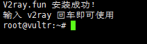 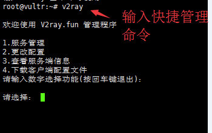
如上图，输入快捷管理命令v2ray后，开始进行v2ray服务端配置。以后只需要运行这个快捷命令就可以出现下图的界面进行设置，快捷管理命令为：v2ray 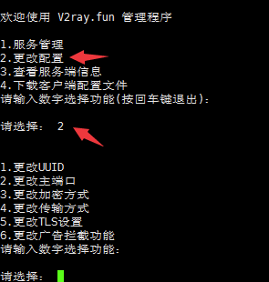
如上图，输入数字2进行更改配置，共有6个子选项，包括：更改UUID、更改主端口、更改加密方式、更改传输方式、更改TLS设置（有域名才行）、更改广告拦截功能。（更改TLS设置和更改广告拦截功能不用设置） 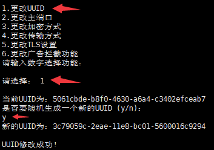
如上图，输入数字1来更改新的UUID号，弹出提示后，输入字母y来确认。 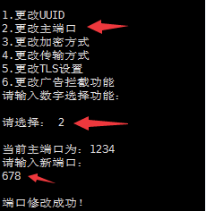
修改UUID号，界面会回到v2ray主界面，重新输入2进入更改配置选项，在输入数字2来更改主端口，主端口范围40～65535，理论上可以任意设置，但不要以0开头！ 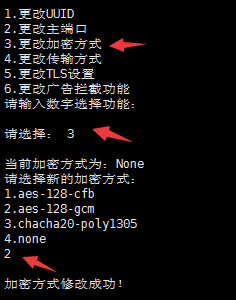
重新进入更改配置选项，输入数字3来更改加密方式，加密方式有4种，最后1种为不加密。 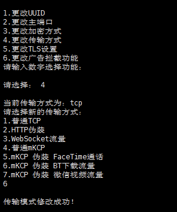
接着，进行传输方式的设置，传输方式共有7种，这个配置对v2ray的速度起着很大的作用，具体哪个最适合你那里的网络环境，需要你自己来尝试。
注意：普通TCP、普通mKCP、mKCP伪装FaceTime通话、mKCP伪装BT下载流量、mKCP伪装微信视频流量可直接设置、不需要域名，HTTP伪装和WebSocket流量需要你有域名，且域名绑定了你的vps服务器ip。 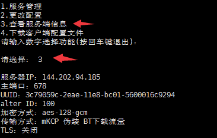
进行了更改配置的设置后，输入数字3可以查看自己设置的v2ray信息。 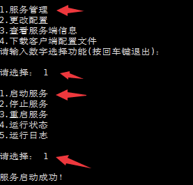
最后一步很关键，那就是启动服务，进入主界面后，输入数字1，然后输入1启动v2ray服务。以后，每次你更改配置或重启vps服务器后都要进行启动服务
因为一键搭建v2ray脚本是一个循环脚本，当你配置结束后不会自动退出快捷管理命令，如果你想退出界面进行其它操作，可以同时按下键盘上的ctrl键和字母z键。
一键加速VPS服务器
wget --no-check-certificate https://github.com/teddysun/across/raw/master/bbr.sh
chmod +x bbr.sh
./bbr.sh
把上面整个代码复制后粘贴进去，不动的时候按回车，然后耐心等待。最后输入reboot来重启服务器，确保加速生效，bbr加速脚本是开机自动启动，装一次就可以了。
演示开始，如图：
复制并粘贴代码后，按回车键确认
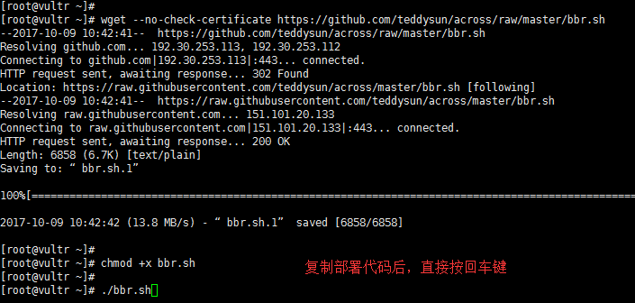
如下图提示，按任意键继续部署
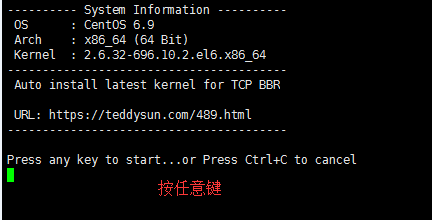
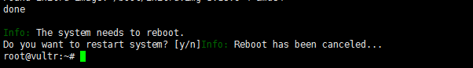
整个部署过程需要2～5分钟，最后输入reboot来重启服务器，确保加速生效，bbr加速脚本是开机自动启动，装一次就可以了。
服务器重启成功并重新连接服务器后，输入命令lsmod | grep bbr 如果出现tcp_bbr字样表示bbr已安装并启动成功。如图：
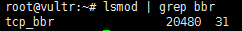
注意：根据反馈，少部分人安装bbr脚本并重启后，几分钟过去了，发现xshell无法连接服务器且服务器ip无法ping通。解决方法是：开新服务器或者重装系统，然后先安装bbr脚本再安装v2ray脚本。或者换锐速加速。
重装系统方法，点击vultr服务器设置界面——“Server Reinstall”，如下图：
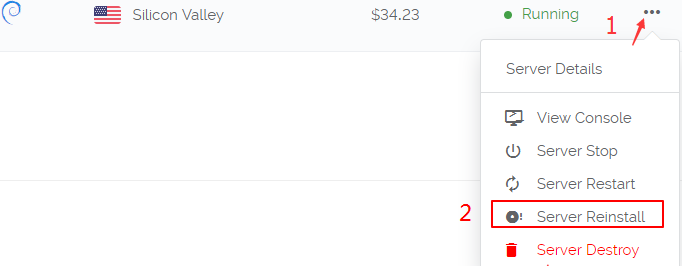
重装过程一般需要5～10分钟。
生成 Namesilo_key
https://www.namesilo.com/account/api-manager
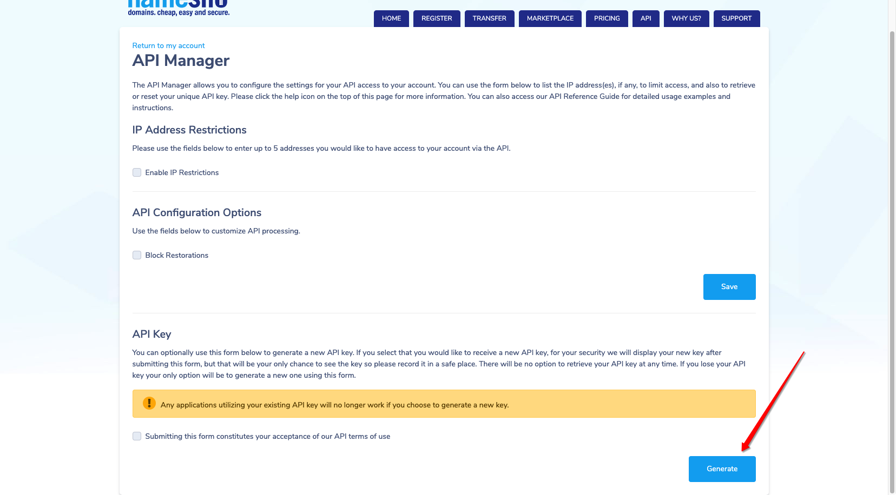
所有域名网站 书写方式
https://github.com/acmesh-official/acme.sh/wiki/dnsapi
教程
https://www.youtube.com/watch?v=RxYAPItx-5E
cd /root/.acme.sh
export Namesilo_Key="xxxxxxxxxxxxxxxxxxxxx"
./acme.sh --issue --dns dns_namesilo --dnssleep 900 -d example.com -d www.example.com
V2RAY 基于 NGINX 的 VMESS+WS+TLS 一键安装脚本
链接：https://www.jianshu.com/p/073e37cfdfae
注意事项
- 如果你不了解脚本中各项设置的具体含义，除域名外，请使用脚本提供的默认值
- 使用本脚本需要你拥有 Linux 基础及使用经验，了解计算机网络部分知识，计算机基础操作
- 目前支持Debian 9+ / Ubuntu 18.04+ / Centos7+ ，部分Centos模板可能存在难以处理的编译问题，建议遇到编译问题时，请更换至其他系统模板
- 每周日的凌晨3点，Nginx 会自动重启以配合证书的签发定时任务进行，在此期间，节点无法正常连接，预计持续时间为若干秒至两分钟
更多内容请查看 CHANGELOG.md
2020-01-25
- 修复 curl依赖确实
- 添加 MT-proxy-go 安装代码，在此感谢 whunt1 的贡献
- 修复 测试签发成功，正式签发失败，后续重装导致的跳过证书签发问题
鸣谢
本脚本的另一个分支版本（Use Host）地址： https://github.com/dylanbai8/V2Ray_ws-tls_Website_onekey 请根据需求进行选择该作者可能已停止维护- 本脚本中 MTProxy-go TLS 版本项目引用 https://github.com/whunt1/onekeymakemtg 在此感谢
- 本脚本中 锐速4合1脚本项目引用 https://www.94ish.me/1635.html 在此感谢
证书
如果你已经拥有了你所使用域名的证书文件，可以将 crt 和 key 文件命名为 v2ray.crt v2ray.key 放在 /data 目录下（若目录不存在请先建目录），请注意证书文件权限及证书有效期，自定义证书有效期过期后请自行续签
脚本支持自动生成 let’s encrypted 证书，有效期3个月，理论上自动生成的证书支持自动续签，自动续签功能有待检验
查看客户端配置
cat ~/v2ray_info.txt
V2RAY 简介
- V2Ray是一个优秀的开源网络代理工具，可以帮助你畅爽体验互联网，目前已经全平台支持Windows、Mac、Android、IOS、Linux等操作系统的使用。
本脚本的另一个分支版本（Use Host）地址： https://github.com/dylanbai8/V2Ray_ws-tls_Website_onekey 请根据需求进行选择该作者可能已停止维护- 本脚本为一键完全配置脚本，在所有流程正常运行完毕后，直接按照输出结果设置客户端即可使用
- 请注意：我们依然强烈建议你全方面的了解整个程序的工作流程及原理
建议单服务器仅搭建单个代理
- 本脚本默认安装最新版本的V2ray core
- V2ray core 目前最新版本为 4.21.3（同时请注意客户端 core 的同步更新，需要保证客户端内核版本 >= 服务端内核版本）
- 建议使用默认的443端口作为连接端口
- 伪装内容可自行替换。
V2RAY CORE 更新方式
执行： bash <(curl -L -s https://install.direct/go.sh)
（ 来源参考 ：V2ray官方说明）
- 如果为最新版本，会输出提示并停止安装。否则会自动更新
- 未来会将相关内容集成到本脚本中并进行交互式操作更新
注意事项
- 推荐在纯净环境下使用本脚本，如果你是新手，请不要使用Centos系统。
- 在尝试本脚本确实可用之前，请不要将本程序应用于生产环境中。
- 该程序依赖 Nginx 实现相关功能，请使用 LNMP 或其他类似携带 Nginx 脚本安装过 Nginx 的用户特别留意，使用本脚本可能会导致无法预知的错误（未测试，若存在，后续版本可能会处理本问题）。
- V2Ray 的部分功能依赖于系统时间，请确保您使用V2RAY程序的系统 UTC 时间误差在三分钟之内，时区无关。
- 本 bash 依赖于 V2ray 官方安装脚本 及 acme.sh 工作。
- Centos 系统用户请预先在防火墙中放行程序相关端口（默认：80，443）
准备工作
- 准备一个域名，并将A记录添加好。
- V2ray官方说明，了解 TLS WebSocket 及 V2ray 相关信息
- 安装好 curl
安装/更新方式（H2 和 WS 版本已合并）
Vmess+websocket+TLS+Nginx+Website
wget -N --no-check-certificate -q -O install.sh "[https://raw.githubusercontent.com/wulabing/V2Ray_ws-tls_bash_onekey/master/install.sh](https://raw.githubusercontent.com/wulabing/V2Ray_ws-tls_bash_onekey/master/install.sh)" && chmod +x install.sh && bash install.sh
脚本有问题, 自己根据URL 手动下载
启动方式
启动 V2ray：systemctl start v2ray
停止 V2ray：systemctl stop v2ray
启动 Nginx：systemctl start nginx
停止 Nginx：systemctl stop nginx
相关目录
Web 目录：/home/wwwroot/3DCEList
V2ray 服务端配置：/etc/v2ray/config.json
V2ray 客户端配置: ~/v2ray_info.txt
Nginx 目录： /etc/nginx
证书文件: /data/v2ray.key 和 /data/v2ray.crt
V2RAY 基于 NGINX 的 VMESS+WS+TLS+Website 手工配置
https://briteming.blogspot.com/2019/01/v2ray-websocket-web-nginx.html
启用cloudflare cdn之后v2ray报403错误
https://www.4spaces.org/v2ray-cloudflare-cdn-403/ 这是因为我增加了header伪装域名，去掉之后v2ray就能正常使用了。也就是cloudflare的cdn功能和v2ray的伪装功能不能同时使用。
v2ray零基础综合教程——搭建v2ray不再求人 一键搭建v2ray百科全书
https://www.youtube.com/watch?v=zpgCJlEdlg8
https://www.iszyn.com/v2raywstls/
ping 查看IP时 匹配省内IP ???
解决办法, 修改 当前IP的 DNS解析 改成 114.114.114.114 或者 8.8.8.8
root@localhost:~# ps -ef | grep caddy
www-data 13977 1 0 04:10 ? 00:00:09 /usr/local/bin/caddy -log stdout -log-timestamps=false -agree=true -conf=/etc/caddy/Caddyfile -root=/var/tmp
root 14697 14623 0 05:42 pts/0 00:00:00 grep --color=auto caddy
root@localhost:~# cat /etc/caddy/Caddyfile
bbs.stonehongkong.xyz {
gzip
timeouts none
proxy / https://www.guokr.com/ {
except /guokr
}
proxy /guokr 127.0.0.1:30363 {
without /guokr
websocket
}
}
import sites/*